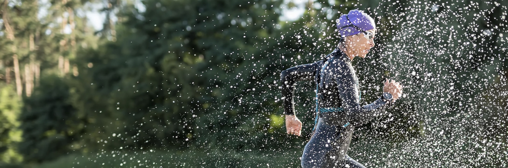
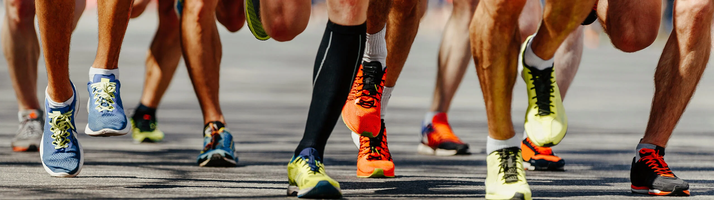

Swim Skills
Stroke drills, open-water confidence work, starts, sighting, and pool-to-race technique progression.
The live site’s video page was mostly a media showcase. This version keeps that purpose, but organizes it into clear categories so athletes and parents can quickly understand what kind of footage and training examples Windburn shares.
Windburn media is useful for more than hype. Training clips help athletes understand technical cues, pacing, race execution, and the team environment. This page acts as a clean hub for the same intent as the old site, with clearer guidance on where to find current footage.

Stroke drills, open-water confidence work, starts, sighting, and pool-to-race technique progression.

Indoor trainer sessions, cadence work, cornering cues, and race-day bike handling reminders.

Stride mechanics, brick sessions, transition setup, and race execution examples.

Team clips from competitions, camp weekends, and milestone performances across the season.
The legacy page functioned like a simple highlight page. In practice, the most current video material is usually shared through direct coach communication and social channels.
Start with clips that explain warm-ups, transition setup, and simple race execution. Those have the highest immediate value.
Look for skill-based media: mounts, dismounts, basic bike handling, open-water comfort, and smooth transitions.
Use media review as a supplement to coaching feedback, especially for mechanics, pacing decisions, and race execution details.